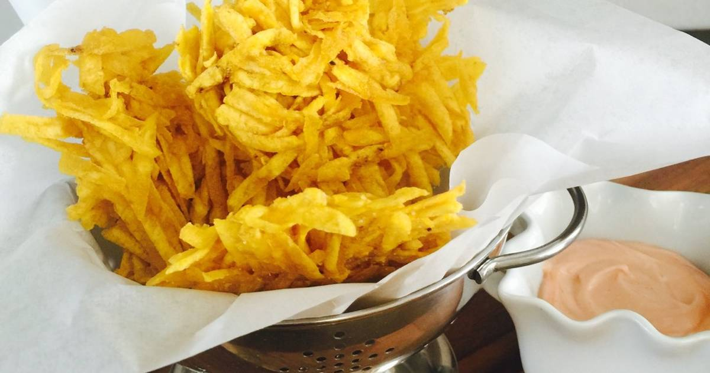

The funny plantain spiders.

Welcome to the plantain spiders recipe page! Now hands on the ingredients(Two Servings):
| Ingredients |
Quantity |
| Green Plantains |
4 |
| Vegetable oil |
to deepfry |
-
Step
Start by peeling the plantains, then take the interior portions and grate like a piece a cheese (into strips). Season with salt as desired.
-
Step
Heat a sufficient amount of oil for frying in a skillet over medium-high heat. To prepare the arañitas, take approximately one or two tablespoons of grated plantains and smash the ‘strips’ together between your hands(like hashbrowns). You can shape them with a cup so they can be used as an eddible bowl.
-
Step
Deep fry the arañitas until golden. When ready, remove from the oil and let sit over a paper towel to remove any excess oil.
-
Step
They are redy to eat. If shaped like mini bowl I recomend some kind of salty protein.